“ Bana,
ulaşmak istiyorsaniz, onertanyeri@yandex.com adresine
e-posta yoluyla, veya kısa yazılı sohbet, sesli görüntülü
görüşme imkanı sağlayan whatsapp messenger üzerinden,
ulaşabilirsiniz. “
Müzik
ve ses materyali siparişi talep formu’
nu
doldurarak, e-posta adresinizle birlike tarafıma iletebilirsiniz.
Aynı şekilde, Sayın Öner Tanyeri' ye iletilmek üzere Özel
ders talep formu '
nu doldurarak, bana iletmeniz mümkün. Enstrüman, veya vokaller,
koro veya çeşitli ebatlardaki gruplar, müzik ve şarkı
projeleriniz için: tonu, türü, yüzyılı, seviyesi, kamu malı
veya çeşitli lisanslarla erişilebilen gibi özelliklerine göre
şarkı ve müzik notaları sipariş etmek için Nota
yazımı talep formu'
nu doldurarak, bana iletmeniz mümkün. Bulunduğunuz lokasyona ve
tarihe, projeye bağlı olarak Canlı
müzik performansı talep formu'
nu, kendinizi tanıtarak talebinizi oluşturarak, bana
iletebilirsiniz. Benden müzik ses kayıtları talep etmek için,
hazırlamış olduğum; talebinizi hatları üzerinde oluşturmanızı
sağlayan Ses
kaydı talep formu'
nu kullanabilir kendiniz ve projenizden kısaca bahsedebilirsiniz.
All
rights reserved and protected. © 2025. Türkiye.”
Vitrin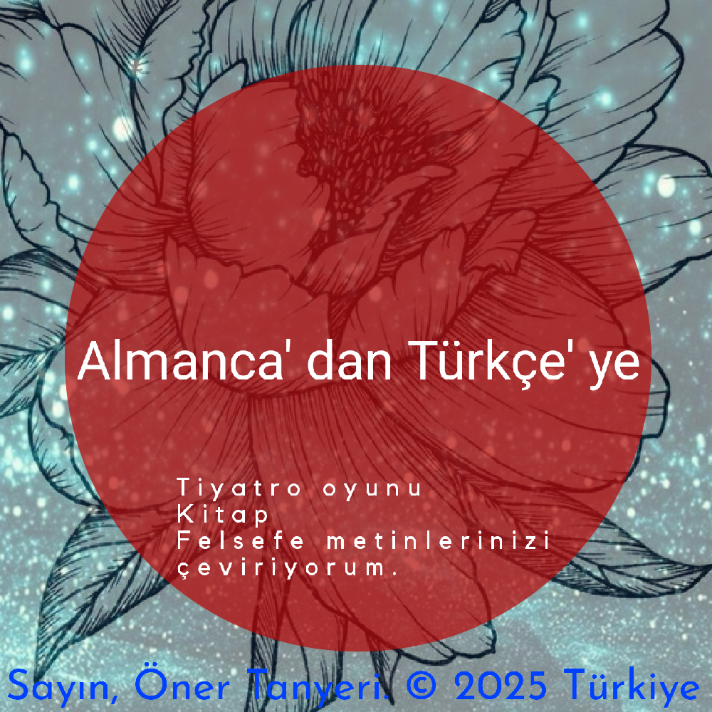
“ Talebinizi
bana iletmek için, de en tr çeviri
talep formu doldurunuz.
“
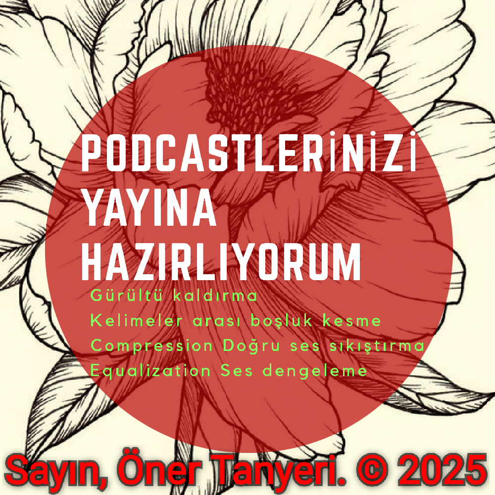
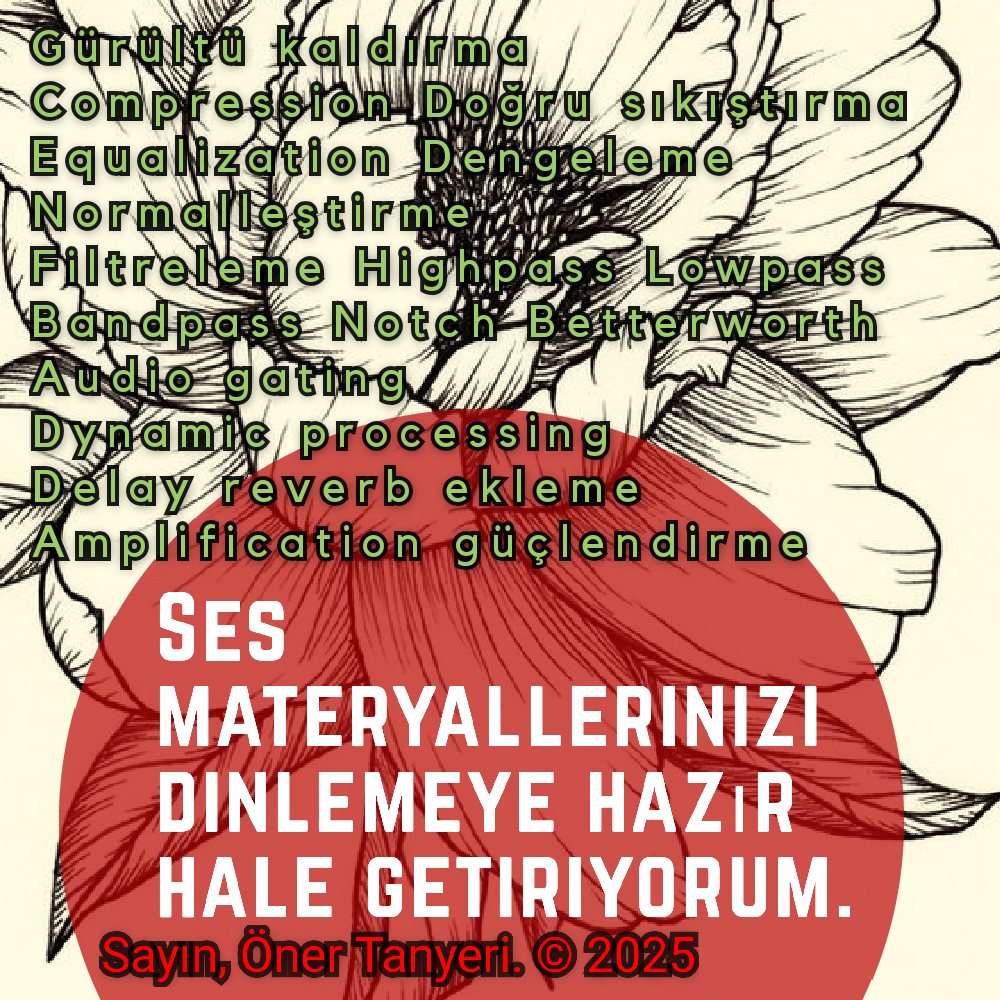
Müzik
yapımı, ve nota yazımı. Yavaş, bağımsız, yerel. Her
türlü etkinlik ve projeleriniz için müzikleriniz hazırlanır.
Mezuniyet törenleri, bitirme törenleri için müzikler. Balolarınız
için müzikler. Yemekler, yemekli toplantılar, ve yemekli
davetleriniz için müzikler. Cafe bar restoran ve mekanlariniz için
müzikler. Anma, uğurlama, merasim, dua, meditasyon, koro, oturum,
forum, ve biraraya gelme etkinlikleriniz için müzikler.
Karşılama,
resepsyon, misafir ve konuk ağırlamalariniz için müzikler.
Açılışlarınız
için müzikler. Aile kutlamalarınız için müzikler.
Festivalleriniz için müzikler. Tatil, doğum günü, yıldönümü,
kutlama ve eğlenceleriniz için müzikler. Firma etkinlikleriniz
için müzikler. Bahçe partileri için müzikler. Düğün
kutlamalariniz için müzikler. Otelleriniz için müzikler. Brunch,
ve kahvaltırınız için müzikler. Karnavallariniz için müzikler.
Konser, ve tiyatrolariniz için müzikler. Fuar, panayır, borsa, ve
mezatlariniz için müzikler. Yatlarınız, gemileriniz, gezileriniz,
taşıtlarınız ve yolculuklarınız için müzikler. Şehir,
kasaba, köy, belde, dernek kutlamalarınız için müzikler.
Sergileriniz için müzikler. Yeni yıl eğlenceleriniz için
müzikler. Şiir, edebiyat etkinlikleriniz, imza günleriniz için
müzikler. Spor etkinlikleriniz için müzikler. Reklam, teaser, kısa
film, film, pazarlama, sunum, tanıtım, program, ve podcastleriniz
için müzikler. Eğlenceli, düşündürücü, hüzünlü, enerjik,
nostaljik, dinlendirici, meditasyon, komedi, dans ve elektronik,
fitness, rock, indie, r&b, country, chill, uyku, parti, evde,
dönemsel, aşk, latin, metal, caz, klasik, akustik, odaklan, soul,
çocuklar ve aileler, oyunlar, tv ve filmler, punk, ambient, blues,
yemek, alternatif, seyehat, funk, doğa, pastoral, müzik
festivalleri, flamenko, reggea, salsa, fusion, rock, ballad, lyric,
prosa, city, beat, opera, smooth, vals türlerinde yazmış olduğum
bestelerimin, orjinal notalarının; birer telif hakları(c) tamamı
bana ait olan kopyalarının, ilgili; kişisel ve ticari olmayan
kullanım, öğrenim ve etüd etmek amaçlı kişisel kullanım gibi,
doğru lisansı ile birlikte, doğrudan Sizlere ulaştırılması.
Burada 20 tane müzik albümü var. ” Çeşitli işlerinizde ve
ihtiyaçlarınıza yönelik kullanmak için müzik türü yapısı
müziğin yarattığı hava ve ortam göz önüne alınarak itinayla
üretilmiş her biri şarkıların uzunluklarına göre azami 12
şarkıdan oluşan çeşitli enstrumanlar ve araçlar içeren sayısız
emek ve, tüketilen diğer müziklere göre bir yer edinebilecek 20
adet müzik albümü Sizleri bekliyor. İster tek başınıza, ister
diğer kişiler ile birlikte dinlersiniz. İster işlerinizde,
mekanlarınızda, toplantılarınızda, sunum ve performatif sahne
sanatlarınızla birlikte, özel günlerde ve toplantılarınızda,
isterseniz; parti ve eğlencelerinizde, adınıza uygun kullanım
lisansınızla, telif hakları çelişkisi olmadan gönül
rahatlığıyla dinlersiniz. Her türlü soru, görüş ve
önerileriniz için, bana ulaşabilir, internet üzerinden de sipariş
verebilir, kargo ile compact disc, flash disk içerisinde veya
çevrimiçi indirmeye açık, 32bit 48k çözünürlüklü wav
cdredbook ya da isteğe göre flac formatında, alabilirsiniz. Satışa
çıktığında bilmelisiniz ki, bu ürünler, ticari kazanç
kapsamına serbest meslek faaliyeti kapsamına girmektedir. Vergi, ve
diğer yasal belgelerimi sormanız gerekir. Tam ve doğruysa,
haklarınızı ve haklarımı koruyarak talep etmelisiniz. Fiyat
kalite karşılaştırmalı, Sizce böyle bir ürünü kaç liraya
satın almalısınız, bunu bana bildirmeli; önce ürünü
dinlemeli, beğenirseniz ve gerçekten içinize sinerse benden
üretmiş olduğum bir müzik albümü satın almalısınız. Bir
düşünelim. For any of the original and the copyrighted blend new
compositions, arrangements, and the variousity of the audio or the
visual materials, produced laboured and made by me, may answering the
different needs and made for the concept of the purposes, ask the
required true usage licence, conditions, and the pricing to me,
via the electronic mail.İster şık bir düğün planlıyor olunuz,
ister şirket etkinliğinizi enerjik bir müzikle hareketlendirmek
isteyiniz, ister özel bir kutlama düzenleyiniz; kutlamanızı
kusursuz kılmak için, tür stil ve örnekleriyle çeşitlilik arz
eden, telif haklarına saygılı müzikal repertuvarımdan müzik
ihtiyaçlarınıza uygun materyali seçebilir, nasıl bir müzik
materyali istediğinizi bana iletebilir, istek müzik listenizi
belirterek projelendirebilir, ve kayıpsız ses lossless audio
formatı, wav formatı, cd şeklinde gibi formlarda, doğru zamanda,
çeşitli uzunluklarda, ilgili uygun teknik donanımla 1.sınıf
müzik ve yüksek kaliteli sound ile hazırlanmış materyallerinizi
alabilirsiniz. Sizlere bu konuda en doğru şekilde, bütün yapmış
olduğum işlerimin ayrıca ardımda iyi ya da kötü birer reklam
olarak kalabileceği bilinciyle, hizmet vermekten gurur duyarım.
Music and the audios gallery from the different genres, styles,
tempos, keycenters and the purposes which are produced digitally,
analogically, mixed and mastered in the computer. The background
musics. The soundtracks. The sound textures. The digital sounds. The
electronic musics.
I
prepared
some
digital sound surfaces for Your range of the projects. You can get
variety of usage licences from me. (c) Made with love, by Mr. Öner
Tanyeri. The original electronic organic sound collage One turkisch
dime coffee. The original sound track The changing pictures.The
original digital sound The modern urban dances. The original sound
texture Yüzey bilim.The original background music The stage walk.
The original hang passage in D moll In the shadows. All 6 are high
quality, blend new mixes, and pretty detailed worked on each. Uniform
sounds. Dry sounds. Monoton sounds. Each has conceptually bounced
together which, the ideas are developing slowly and, independent. For
the scenes, the backgrounds, the presentations, the speeches, intros
of the trailers, a portion or as the entire track; where You need a
sound push, a blank, concentration, or dignity for even in a minute
of the empty times. Not harmonic, or melodic but, rhythymic more or,
less. An original album, at the top quality and level, for your
different personal practice needs, both for the instrumentalists and
the vocals, is created by mr. Öner Tanyeri. (c) Well, this album,
will lift up your sound and music understanding, and feeds your basic
communication skills. You can get this, and the true usage licence,
from me. This album is not for the music production. Rare, blend
choise and synthesis, for the listening. Clear sound.
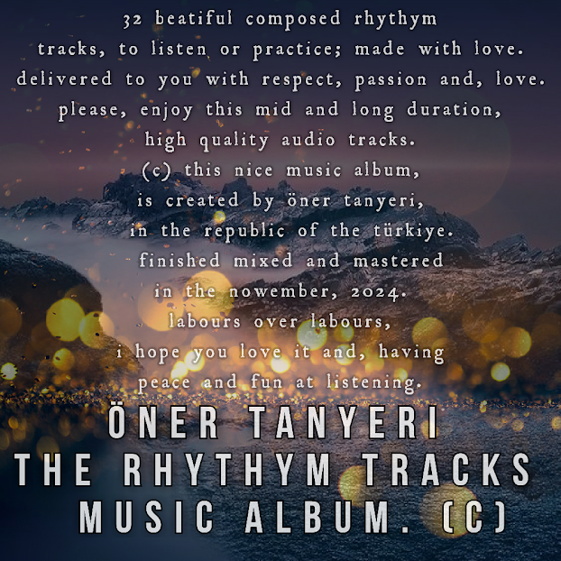
”
An original 6 track album, created by mr. Öner Tanyeri. (c)This
album You can get for your audio and the visual projects. Ask me to
get it, and the true usage licence. A minimalistic, well mixed, broad
scened taste of the digital music. Not for the detail oriented
synchronisation. One idea, one taste, and easily adaptable, slow
developed variations in 6 tracks. Clear and top quality sound.
Conceptual and digital. “
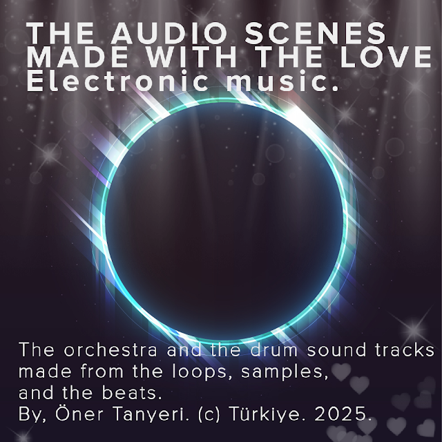
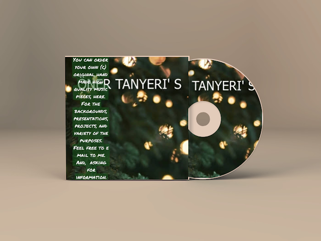
Dijital
müzik albümleri, müzik ve ses materyalleri
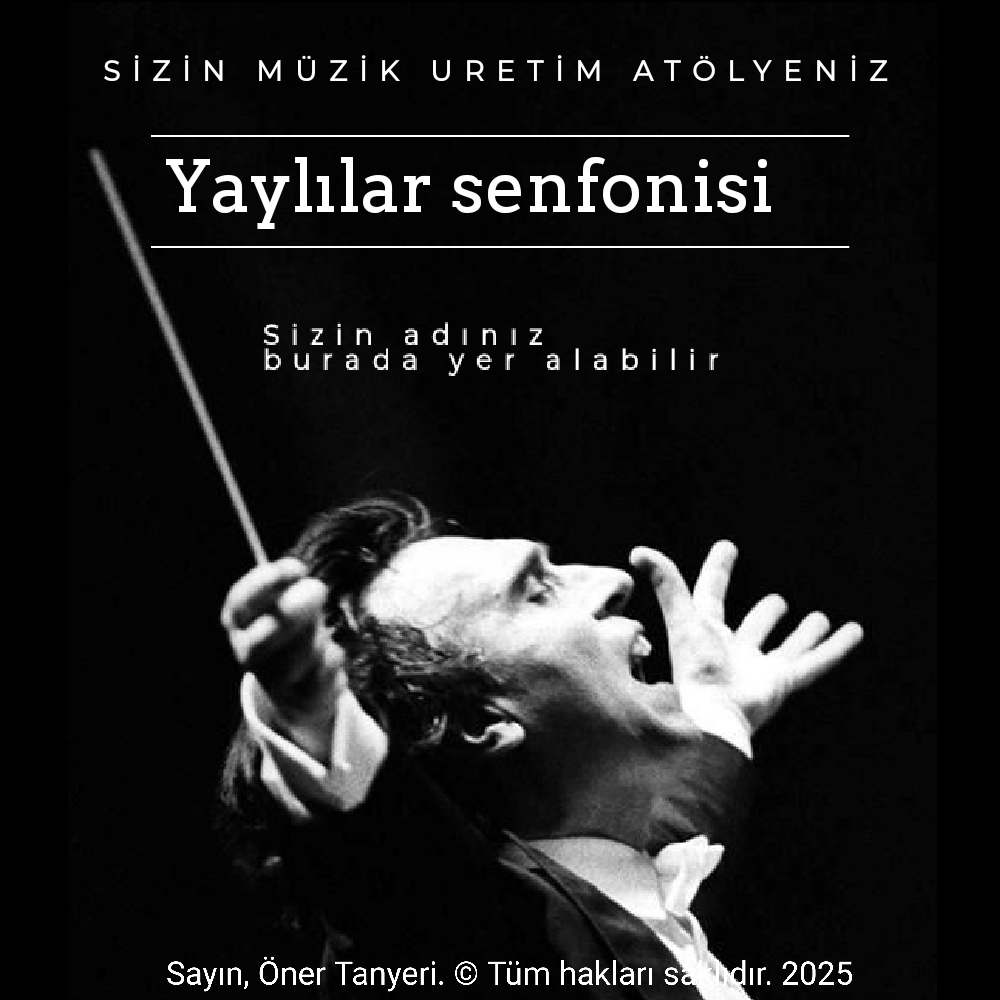
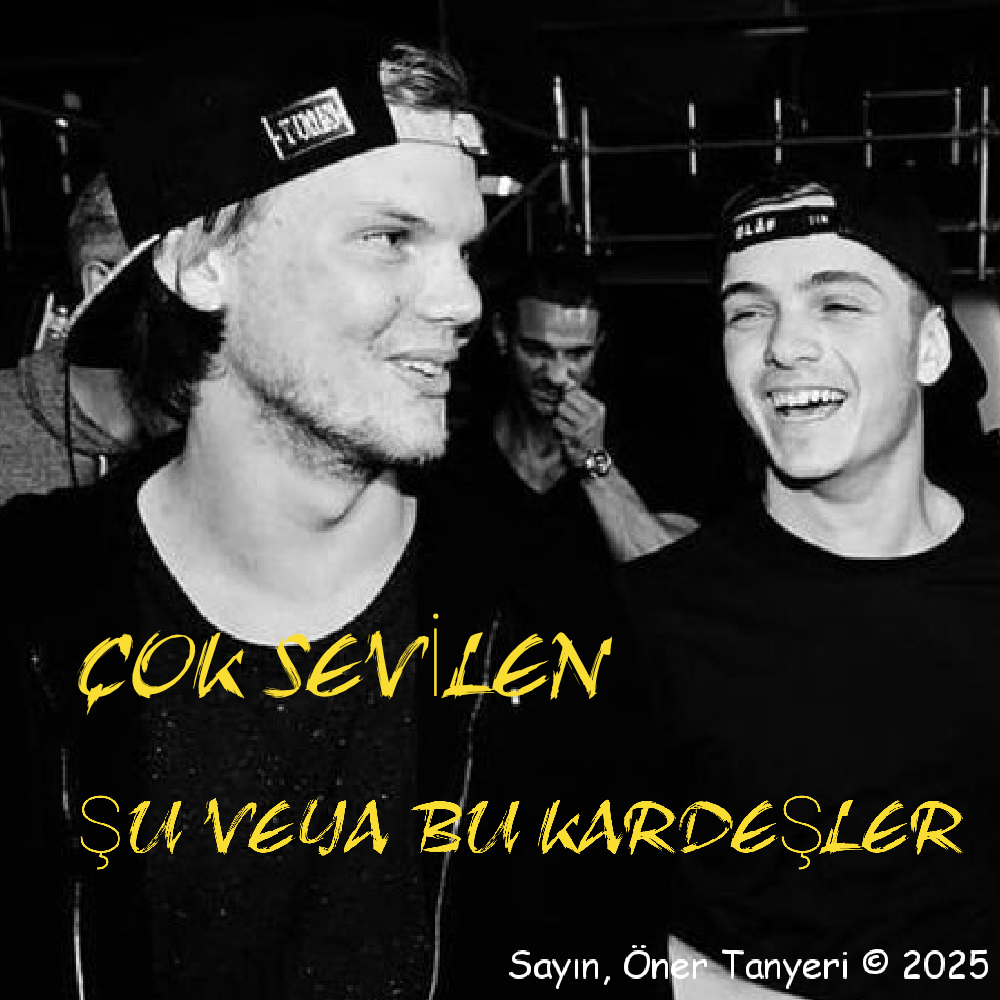
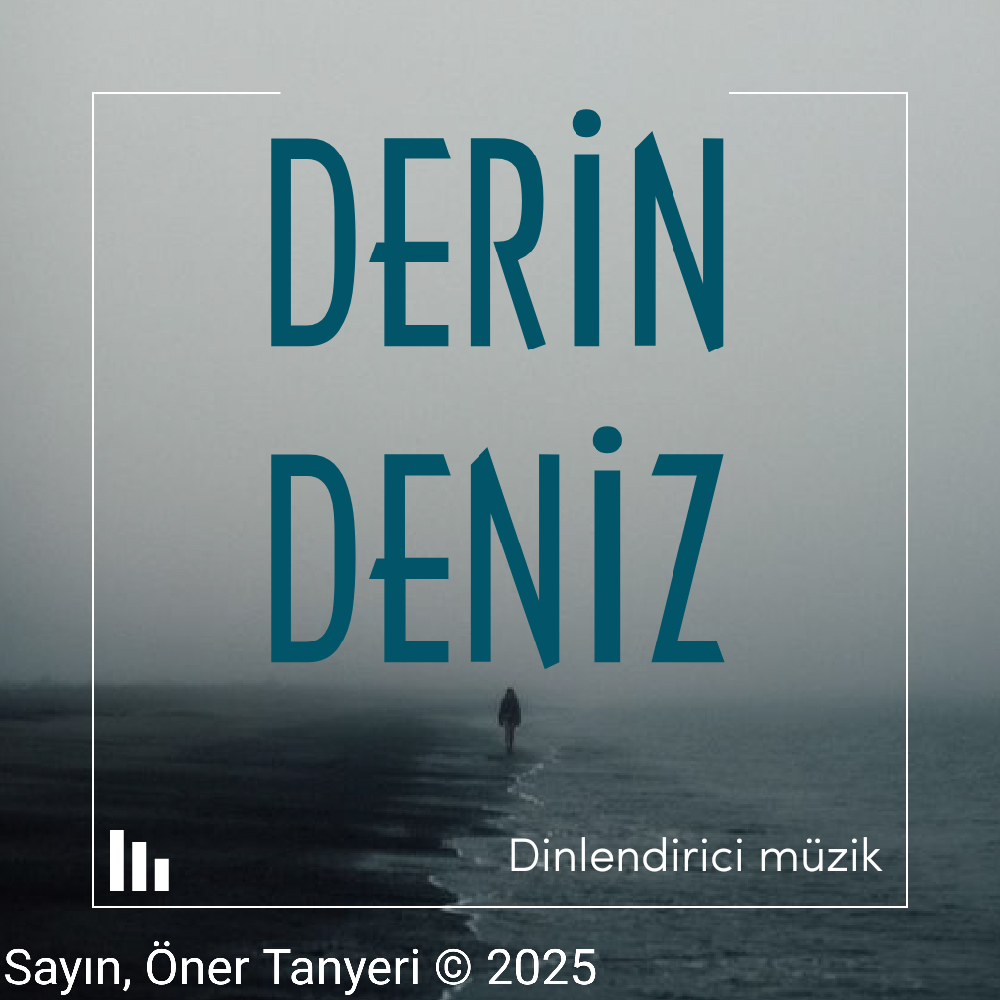
Dijital
müzik albümleri deyince, bir çoğumuzun aklına kalite, orjinallik
özgünlük ve ihtiyaca ne kadar hakim cevap verebilir olduğu gibi
sorular akla gelse de; gelişen teknolojiler, bir çok daha nitelikli
düzgün iyi işleri de, açığa çıkardı. Doğru kullanım
lisansı ile, talebinize doğru cevap veren ürün ve hizmetleri
almak önemlidir. Talebinizi belirlemeli, anlatmalı ve
bildirmelisiniz. Şunun gibi, şu teknik özelliklerde, şunlar
benzeri bir şöyle ürün gibi, örneğin. Talebinize uygun
fiyatlandırma sonrası, ödemeyi yapar materyalinizi dijital
formatta teslim alırsınız, adınıza kullanım amacınıza uygun
süreli veya süresiz telif hakki lisansıyla birlikte nihai son
kullanıcı olarak. Size ürünü, cc0, ticari kullanım dışı,
performans haklari, atıf, cc, veya tum haklari sakli, belirli bir
işinizde kullanmak üzere, ticari ve her türlü izinsiz kullanım
paylaşım dağıtımı izin verilmeyen, süresiz; bir işiniz devam
ettiği müddetçe kullanımınıza izin verilmiştir gibi
şekillerde, teslim edebilirim. Bunun içerisinde kompozisyon, ses
tasarımı, mix, mastering işleri ve nota yazımı, ayrica
notalarinin sozlerinin ve müziklerinin çeşitli kullanım hakları
olabilir: yalnizca 3 dakikalik bir ses materyalinin içerisinde,
örneğin. Bu, doğru teslim lisansı ile gönül rahatlığıyla,
%100 orijini ya da kaynağı sorgulanabilir özgün ve sayin Öner
Tanyeri tarafindan Türkiye’ de üretilmiş bir eser, ses ve
malzemenin, yasal yazılım, efekt, ve çeşitli kayıt yahut
bilgisayarda kullanılan ses üretim araçlarının tamamı, linux
ubuntu studio güncel sürümü ve seçilerek derlenmiş yazılım
setleri olarak içerisinde; korsan, markaların taklitleri olmayan
kullanılan ses bankalarına değin dünyanın tanınan bilinen
sorgulanabilir ve adıma izinli edinilmiş; çeşitli dijital araçlar
yahut yazılım ve kabuklarla üretilmiş, güvenilir materyallerden
oluşmaktadır. Sanal enstrumanlar ve ses bankaları derken, ses
bankalarını üretirken ve yazılımlarıma entegre ederken, taklid
bilinmeyen kişiler tarafından üretilmiş ve değiştirilmis
yazılımlar kullanmam. Akustik kayıtları çağdaş işine uygun
teknik özellikli mikrofonlarla alırım. Analiz ve sentez
araçlarımız ve plug’ inlerimizde tesadüfi ayarlar kullanmam,
hum noise ve efektle materyalleri şişirmem, ayrıştıramayacağınızın
üzerinde kalitede görünen ürün, hizmet sunmam. Bu etik
değerlerle ve yavaş çalışmayı, doğru buluyorum. Artı ve eksi
özellikleriyle, ne ise odur. Veri satmıyorum. Sesi, ses
malzmelerini veri olarak malzeme olarak satmiyorum ya da,
soyutlamıyorum. Taklid korsan çarpıtma etkilenim telifsiz ürün
fikir ve eser satmıyorum. Hazırlamış olduklarımlarımdan veya
talebinize göre istediklerinizden; imkanlarım çerçevesinde
müziğin bir fikir sanat ürünü olarak yarım yamalak değil,
küçük veya büyük her biri doğru düzgün ve işe yarayan ürün
hizmet teslim ediyorum. Az bilgi ile audio fidelity kavramını
örneğin duymamış biri için yanlış fikir ve izlenimlere, bolca
sahip olunmuş olabilir. Talebe yönelik ürünü seçerken dikkat
etmeniz gereken şeyler; tanıdık bildik, 1 saatlik internet a. i.
ve kelime bilgilendirme araştırmasıyla olmamalıdır. Ne
istediğinizi bilmelisiniz talebinizi iletmeden önce. Neyi hangi
fiyata kimden istediğini kendisi bilmeyen talepler, ürün almayı
başarsa bile, o işten hayır gelmeyecek doğru ya da düzgün,
içinize sinen işler olmak yerine az ya da çok çarpıtılmış
küçük veya farklı bir amacı kurtaran, değerinin veya yerinin
dışında, bir ürün veya iş olur. Bunu bilerek talep edin, ve
zamanında teslim alin. Bu değer aşağı veya yukarı da olabilir.
Yanlış işlerle nakiti değişmek yerine hiç bir iş yapmamak daha
doğrudur. Ülkeler 3 5 sene faaliyette bulunmuş iş değiştirmiş
müzik üreticileriyle doluysa, her bir lira onemlidir.
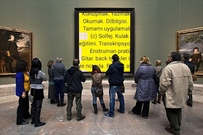
“ Gitar
özel dersleri verilir. The tuitions, are given, after the least
amount of the interest, officially given after the successfully
dealing and finds place either at mine. Not hourly or weekly
calculated but, monthly on a 6 months intervals basis; both
consisting from the theorical, and the practical block of the hours,
each week. Solfej,
kulak eğitimi, transkripsyon, notayla. 1 özel ders iki bölümden
oluşmaktadır, iki saati geçebilir de. Öncelikle, klasik gitar
özel dersi ilanıma ilginiz ve zaman ayırarak, ilandaki fotoğraf
dahil itinayla okuduğunuz için teşekkür ederim. Bundan sonrası,
aceleyi terk edip, şöyle derli toplu bir düşünürseniz, kolay.
Her yaştan çeşitli deneyim, duyum, bilgi ve veriye sahip çeşitli
mesleklerden kişiler, günümüzde çeşitli konularda özel
derslere ilgi duyabilmekte, çevirmeli ağ kütüphaneler kitaplar ve
erişebildikleri kişiler aracılığıyla amaçlarına göre
ihtiyaclarina uygun çalıştırıcı mentor tutor eğitmen ve
öğretmenlerden, ülkemizde de yasal olarak faydalanabilmektedir. Bu
boş zamanlarını tercih ettikleri alanlarda verimli bir şekilde
değerlendirmek için süreli veya süresiz anlaşılabilen uzmanlar
aracılığıyla, halk eğitim kursları özel dershaneler ve
kurumlar, ya da bağımsız kişiler ile özel dersler şeklinde
olabilmektedir. Okutmanlar da, bir alanda öğrenilmek istenilen
teknik teorik veya uygulamalı bilgileri edinerek, en kısa zamanda
istenilen uygulamalı test edilebilir hedeflere ulaşmalarında,
zaten araştıran çalışan ve bu süreci daha doğru ve zamanını
doğru kullanarak değerlendirmek isteyen kişilere, rehberlik
etmektedir. 6 ay gibi sürelerde; ögrencilerin kendi çabalarıyla
emekleriyle ilerleyen özel ders faaliyetleri, ayrıca; dikkat
disiplin ve sonunda ödülü kalıcı bir ozellik, başarılmış
örnekleri gibi, iyi işler olmaktadır. Bire bir, ve iki kişilik
gruplar halinde. Yeterli talep olunca başlar. Gitar çalabilenler
yetiştiriyoruz. Telif ve kullanım hakları hakkında bilgilendirme,
ses materyalleri türleri nelerdir, kaynaklar nasıl kullanılır, ne
nedir ve ne değildir; ses materyalleri ile kendi izinizi oluşturmak
konusunda rehberlik. Gitar tutuş pozisyonları ve doğru çalma
teknikleri, gitarın tel değişimi, basit bakımlarını yapmak,
temizliği, kullanımı, ve korunması. Metronom, akord aleti, nota
sehpahası, gitar ayaklığı, kelepçe, tel susturucusu, gitar
sehpahası gibi çeşitli temel araçların kullanımının
öğretilmesi. Ritim ve arpej çalışmaları. Akor geçişleri ve
melodi çalma becerisi. Nota okuma ve temel müzik teorisi. Tür tür
müzik formu müziği bir araya getiren müzikal malzemeler şarkıları
çözümlemek ve yazmak. Unutulmamalıdır ki, gitar emek ve zahmet
gerektiren ancak ileride meyveleri kalan, ödülü edinilmiş bir
hobi ve, aynı zamanda özellik olabilen bir uğraştır. ” Bir
çayımı içmek üzere gelmek için, benden her zaman randevu
alabilirsiniz. Buradayım.
Bunun
yanında çeşitli dvd cd kitap ve doğru telif haklarına saygılı
tedarikçilerin gösterilmesi, kendi video, mp3 ve pdf’lerinizin
nasıl hazırlanacağını, nasıl kendinize ücretsiz çevrimiçi
yer alabileceğinizi, kendi kayıtlarınız için, isminize ait
kategorilerinizi ve klasörlerinizi nasıl oluşturacağınızın
gösterilmesi. Materyallerinizi organize etmenin, ve bu konuda
erişebileceğiniz çok çeşitli bilgileri nasıl organize
edebileceğinizin gösterilmesi. Pratik etmeye yönelik, ilgili doğru
eşlik şarkıları ve altyapılarının gösterilmesi. Pop, rock,
klasik ve blues gibi yabancı müzik türlerinde gitar teknikleri.
Folk gitar, fingerpicking, fingerstyle, downstroke upstroke, gitar
çeşitleri nelerdir. Gitarların farkları, pena kullanım
teknikleri, aksanlı ritim, ve sağ el vuruş çeşitleri. Halk
şarkıları, balad’ lar, gitarda akor üstyapıları, akorların
temel sesleri, power akorlar, kademeli akorlar, hammer on ve pull of
teknikleri, slide, vibrato, bending, 1/8 lik, 1/16 lik, ve 1/8
triole’ lerden oluşan do ton merkezinde ritim alıştırmalarının
uygulanması, legato ve bending teknikleri. Ritim, ya da eşlik gitar
ile 3 sesli akorların basılarak, aynı anda seçtiğiniz bir
şarkıyı sözleri, ritimi, ve doğru notalarıyla birlikte çalmak
ve söylemek. Çeşitli solo gitar için egzersizler. Akorların
serimleri veya arpejlerini çalmak. Bir akor çalarken ilgili ses
dizisi ile kendi yaratıcılığını kullanarak heceler, cümleler,
motifler yazmak ve, bunları icra etmek. Gitar ile üretilen seslerin
özelliklerini, ve yüzyıllara göre, kullanıma girmiş
özelliklerini tek tek tanımak ve ayrıştırma yeteneği kazanmak.
Çeşitli bestekarların basit klasik batı veya türk müziği,
lirik epik veya prosa, gitar eserlerinden seçerek, fingerstyle
tekniğiyle çalınması çeşitli seviyelerdeki gitar ile çalınan
eserlerden; örneğin, greensleeves romance, gülnihal, albeniz,
giuliani, sor, lobos, aydıntan, rodriguez, veya boccherini, ya da
bir J. S. Bach eserinin gitar ile icrası söz konusu olabilir.
Öncelikle, erişilebilir kaynaklardan daha önce bu eserleri icra
etmiş olanlar var ise, onların yorumlamalarını birlikte dinliyor,
analiz ediyor ve anlamaya çalışıyoruz. İlgili okumalar, ve varsa
yazılmış fikirleri okuyoruz. Musescore gibi bilgisayar yazılımları
ile yapılan nota yazım işleri için ubuntu studio içerisinde
cesitli yuzyillar ve bestekarlardan ve çeşitli şarkılardan,
çeşitli tempo ve türlerde olanlardan seçilerek doğrudan müziği
dinleyerek notalarını kağıda yazmayı, diğer ismiyle
transkripsyonu öğretiyorum. Bunun amacı, dinlediği bir eseri
kağıda yazabilir müzikal okuma yazma kazanırken, müziği
oluşturan armonik yapıları, ses özelliklerini, ve sesin
özelliklerini tanımak, ayrıştırabilmek tanımlayabilmek ve
bunları, heceler cümleler gibi bir müzisyen olarak okuyabiliyor ve
yazabiliyor olmaktır, bu yazdıklarımızı bilgisayara girip çaldır
tuşuna bastığımızda doğruluğunun yüzde kaç başarılı
olduğunu, anlayabilmekteyim. Türler ve kategoriler olarak, müziğin
formu müziği bir araya getiren müzikal malzemeleri, şarkıları
çözümlemek ve yazmak. Başlangıç ve altı seviyelerden azami
okuryazar seviyesine geçişi kolaylaştırmaktadır. Bestekarları,
düzenleyenleri, ve sözlerini yazanların 70 veya 100 yıldan önce
vefat etmiş, örneğin: yeni yıl şarkıları, hymn, gospel pray
şarkıları, çocuk şarkıları, halk şarkıları, anonim
şarkılar, enstrumental şarkılar, klasik müzik eserleri şarkı
şarkı nota nota tek tek doğru artikulasyon dinamik ve özellikleri
ile okur yazar anlar ve icra etmeyi, tamamı uygulamalı bir şekilde,
gösteriyorum. Müzik çeşitleri olarak: dinlendirici, nostaljik,
eğlenceli, düşündürücü, meditasyon, chill out, smooth, v.b. ve
çeşitli müziklerin altyapılarını nasıl yazıyoruz, ve neye
benziyorlar? Beğendikleriniz müziklerden şarkılardan seçerek,
şarkıyı analiz ediyorum. Bu müzikleri, seçmiş beğenmiş
olduğunuz müziklerin kalitesine yakın, üretmek mümkün mü?
Videolar izlenilerek, metodlar okunarak, ve daddario, truefire,
musescore learn gibi çeşitli müzik veya enstruman, vokal öğrenme
platformlarının yardımlarıyla, solo enstrumanlar veya vokal
olarak, tek kişi ya da çeşitli ebatlardaki gruplar halinde, bu
müziklerin yazılması ve üretilmesini, tamamı uygulamalı
gösteriyorum. Orta çağ 14. ve 18. yüzyıl arası, veya 18. ile
20. yüzyıl arası üretilmiş klasik müzik şarkılarından gitar
ile çalınabilecek şarkıların tanıtılması, ve kendi başınıza
çalabileceğiniz, notaları görerek gitar üzerinde icra edebilme
yeteneğinin kazandırılması. Unutulmamalıdır ki, gitar emek ve
zahmet gerektiren ancak ileride meyveleri kalan, ödülü edinilmiş
bir hobi ve, aynı zamanda özellik olabilen bir uğraştır. Henri
lemoine, solfege de solfeges kitabi çalışmaları yardımıyla;
temel nota okuma yeteneğinin kazandırılması. Örneğin: 6 aylık,
1 kişilik haftada 1 blok ders olan bir özel derste; do ses
dizisini, gitar enstrumanının üzerinde bütün yerlerde,
birbirinin ardısıra yukarı ve aşağıya çalabilmeyi kazandırmayı
amaçlıyorum. Bu konular, gitar özel dersleri boyunca sistemli bir
şekilde işlenerek müzisyenlerin hızlı ve doğru bir şekilde
ilerlemesine yardımcı olur. Özel dersler zaman kazandırır. Müzik
üretme işlerini ve çalışma alanlarını üreterek görerek
öğrenirsiniz. Veri veya şifre gibi az bir bilgiden üretilen kopuk
kopuk bilgiler edinmek yerine, neyi seviyorsanız onu yapar, neyi
öğrenmek istiyorsanız bütünlüklü ve fikir sahibi olacak bir
şekilde onu yapmak için, gerekli şeyleri alır, onda ustalaşmaya
başlar zamanla, ve eksik veya yarım yamalak yanlış yönlerinizi
başarılı örnekleriyle karşılaştırarak kendiniz bulmayı,
tamamlamayı, hazır bilgiler yerine düşünmeyi emek harcamayı
keşfederek, neyi öğrenmek istiyorsanız, böylelikle; onu
öğrenirsiniz. Tanışma bilgilendirme ve her türlü
sorularınız, özel ders taleplerinizdeki hedeflerinizi ve özel
ders süreçlerinizin programlarını oluşturmak için, her zaman
bir ücretsiz çayımı içmek için, benden randevu alabilirsiniz,
efendim. İlk 1 saatte, bunları yapıyoruz.
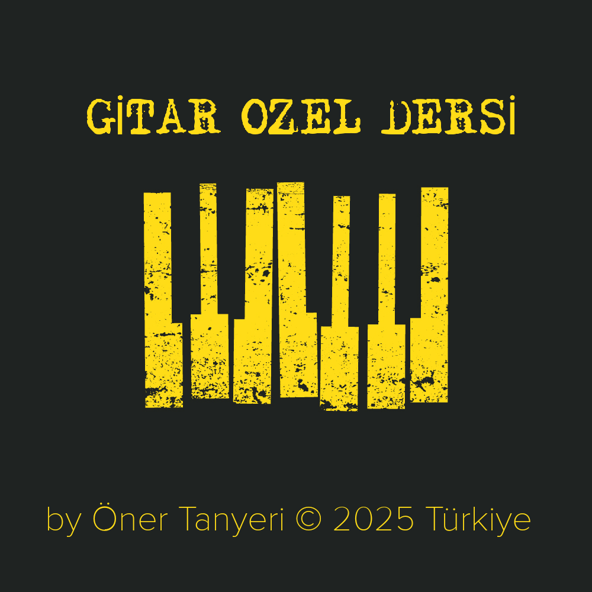
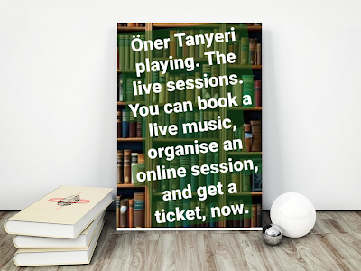
○
The
rock guitar music, including the different styles of the rock music
and the ballads, performed with the original backing tracks of
the band instruments and, live with the electric guitar performed.
Entertaining, rhytmic, usual. A set of live music is about 45
minutes, to 1 hour with the plug-in, plug-out’ s, etc. AVAILABLE.
○
The
blues guitar instrumental musics, live composed; diverse picked
or live the fingerpicking phrases, over the own hand made original
backing tracks. A set of live music, ca. 50 minutes to 1 hour with
the plug in plug out etc. a.s.o. AVAILABLE.
○
The
jazz guitar instrumental musics, like; the happy, sad, energic or the
good moods. Swing latin popular tunes, original harmonies at the
piano, bass, and drum on the backing tracks, with the live jazz
guitar at the lead, one set. Sounding like the well known standards.
Each 7 to 8 tunes are blend new, fresh, and creating contrast. Live
performance, a set is about 45 minutes to 1 hour, with the 15 minutes
in the sum for the breaks, preparations, etc. AVAILABLE. ○
The
worship, ambient, gospel, praise, celebration, funky, rhytmic, soft,
meditative instrumental musics live music set. Electric guitar, live
performed with the backing tracks. 1 hour duration. AVAILABLE.
For
the compositions, arrangements, and the kinds of the audio or the
visual materials, produced laboured or created by me, and for the
different needs and the purposes, ask me; via
e-mail.
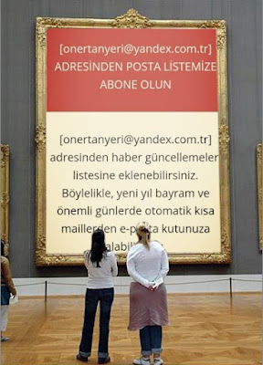
“ Do
not pro-cross or etiquette the music as digital or the computer made,
classify; and, go! From the cinema, theater, t.v., radio, commercial,
shopping mals, from the local musics, to the wide commercials,
teasers, presentations, entertainment, voice-overs, the tourism and
to the diversity of the fields of our daily lifes which are the
musics are employed; the most percentage of them are produced in the
computers, with the studio equipments, and digitally. Analogly
produced music means the music is produced acoustically by the
instruments and made live. The digital audio workstations, or the
studios as a short informative and instructive to be assumed; are
even too, a kind of using the from the computer produced,
synthisized, or – mixed, mastered, edited, sampled, sequenced and
from the computers pre- or post- processed sound materials; in a
pretty complex art and way. ”
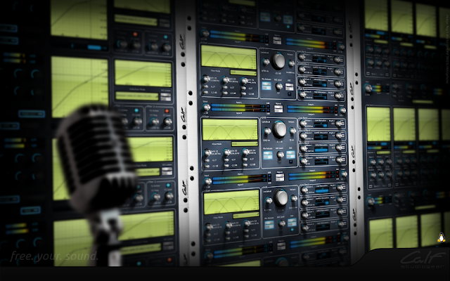
“ Küçük
ve orta ölçekli ses kayıt işleriniz için,
ücretsiz bir çayımı içmeye gelebilirsiniz. İstediğiniz işi,
en iyi kalitede birlikte çıkaralım, Sizi bu iş hakkında
bilgilendireyim, sorularınız olursa. Şu anda kullandığım
ekipmanlar şunlar, 64 bit ubuntu studio 24.10 isletim sistemli
desktop bilgisayar, butun telif haklari icerisindedir, ve her turlu
cesitli kullanima yasal olarak izin veren, açıl kaynaklı bir
işletim sistemi ve yazılımdır. Buna, üretilen ses ürünün
ticari, performans ve kamuya açık kullanımı dahildir. Yazılım
olarak, ardour audacity lmms musescore ve diger cesitli linux
yazilimlarini kullaniyorum cesitli; karıştırma düzenleme
besteleme yazma derleme mastering processing ve sentezleme, kayıt
gibi işlemler için içerisinde her biri sound ve ses tasarimindan,
ses muhendisligi konularina kadar, dunya capinda en ust kalitede
materyalleri uretmek icin kullandigimiz farkli ureticiler tarafindan
gelistirilmis 1000′ e yakin farklı araç bulunmaktadır. Yetersiz
veya pratik bilgi fikir sahipleri, pahali sistemlerin iyi sonuç
cikaracagini dusunebilir. Araclari tanimamakta ne ise yaradiklarini
kulaktan dolma bilmektedir. Beat te altyapi da bir cok tarzda muzik
te uretiyorum. onertanyerimuzik wordpress sayfamda aktuel islere
vitrin bolumunde goz atabilirsiniz. 64 bit cd ve uzeri kalitelerde
kayit mix mastering yapiyorum. Su an cd red book diye taninan, 24 bit
48 khz örnekleme hızı ve buffer size 1024 samples ile, bounce to
track yapiyorum. Sahnede kullandigimiz enstrumanlarda aktarilan
signal 16 bit ve örnekleme hizi 44,1 oldugu düşünüldüğünde,
kulagimiz uzerini ayristiramayabilmektedir. Kayit için, midex bm200
profesyonel condenser mikrofon, last voice bm800c-bk profesyonel
condenser microphone, ve last voice lv45a dynamic mikrofon
kullanmaktayim. Gitar vokal kayitlarina uygun olup, alınan kayitlar
yankı gürültü analiz edilerek, araçlarla temizlenilmekte,
kompresor equalizer ve islenmektedir. Fender squier elektro gitar
midex mga25 amp, jwin midi klavye 88 tuşlu bulunmaktadır. “
“ Elektronik
kitaplar, öğrenme videoları, dijital ses istasyonlarında
kullanabileceğiniz sf2 formatında kendi
üretmiş olduğum cigar box sap gitardan
bir soundfont ©.
The
score writing, notation and, arranging for the different purposes,
instruments or vocal, and the variety of levels; either with hand and
pencil to paper or, at computer with the software. For personal, or
groups of musicians; practice purpose. For the commercial projects
variety of the usage needs. Or, for the performances. I do prepare
Your notation needs answers. Coloured, or black and white. Printed to
the different sizes of the paper like a4 a3 a2, vertically or
horizontally printed, et cetera or, in midi, pdf, jpg, or any at the
musescore available file formats. True written page numbers,
attributions, composers, lyricists, or any kind of the related
information. The licences types, entypen below. Top professional
whole score format and look. Below are some previewed screenshots,
each are easily readable, definable note or punto sizes. And,
transposeable to your instruments range. “
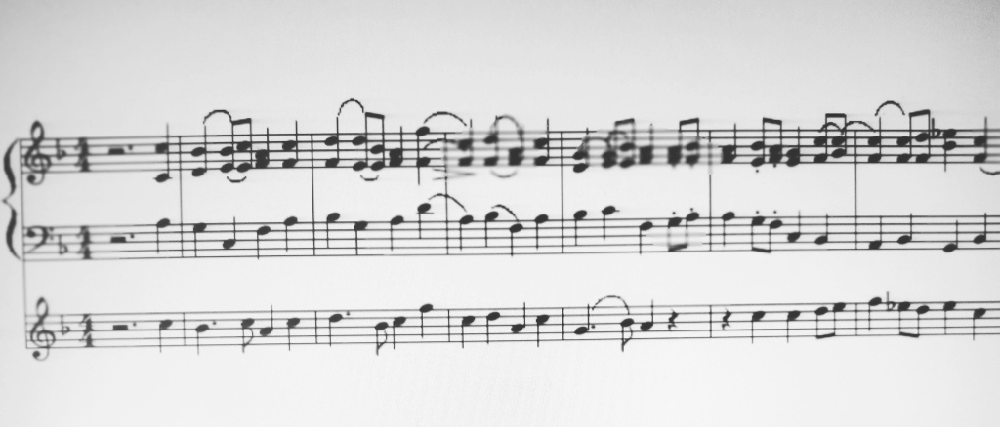
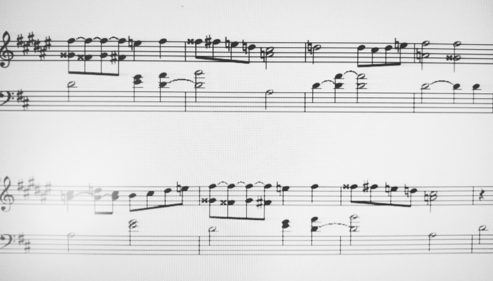
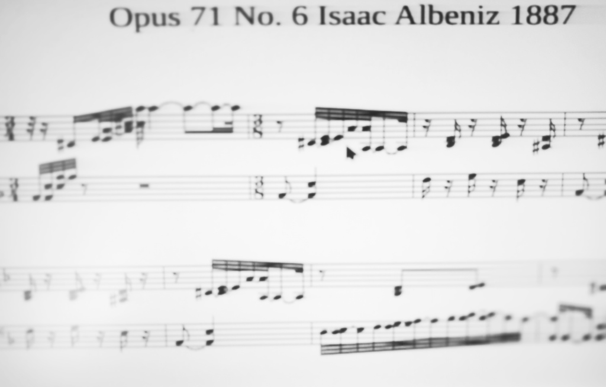
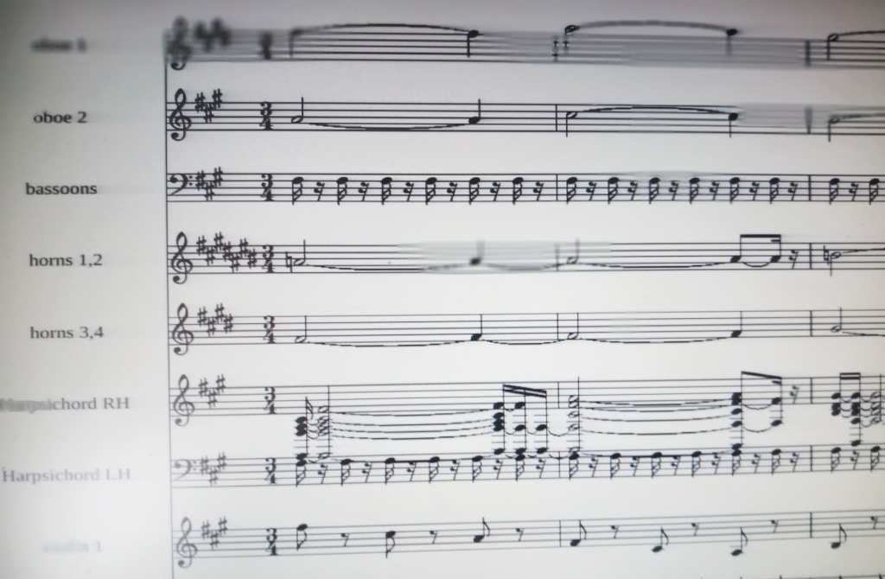
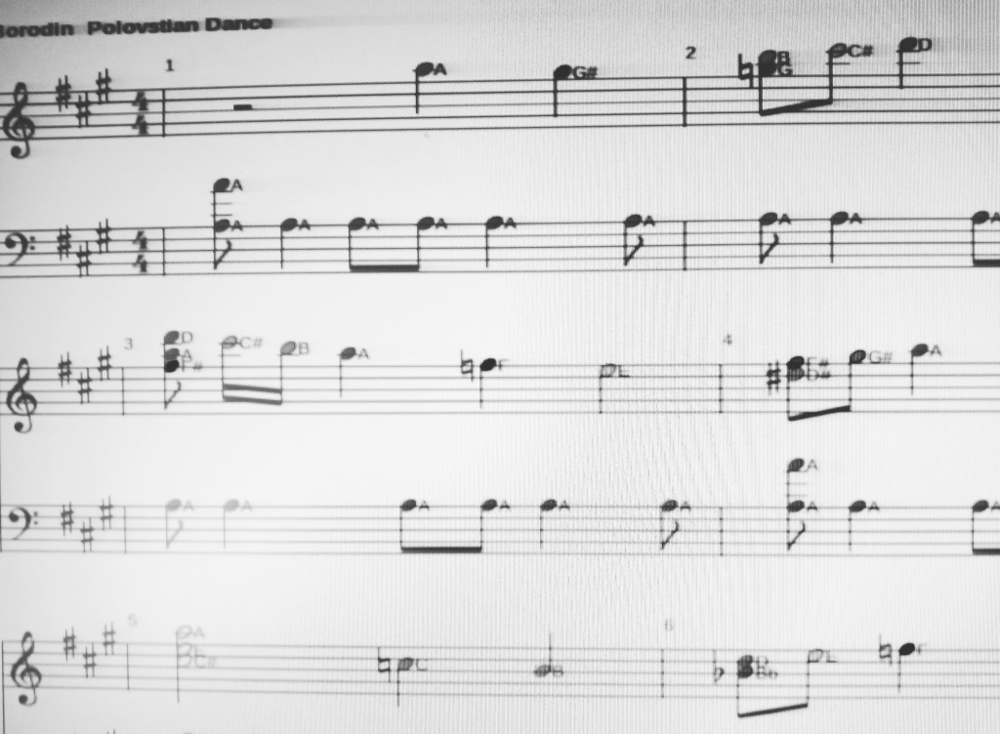
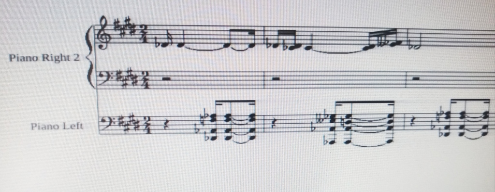
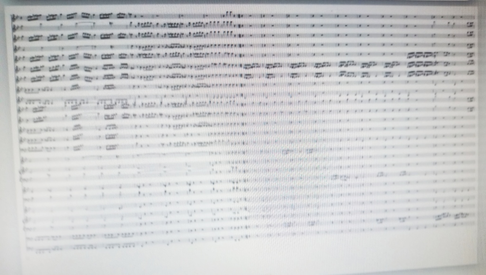
“ Nota
yazımı işleri.
Kişisel öğrenme ve müzik icra etmek, grup, tiyatro gibi muzik
faaliyetlerinizde kullanmak amaçlı; kamu malı veya kendi
besteleriniz olan eserler, bilgisayarda p.d.f. e-kitap formatinda,
serbest meslek faaliyeti kapsamında iş anlaşması usülü,
okunaklı yazım dinamik trafik tempo artikulasyon ve aksan
kurallarına uygun olarak, yazılır. Ticari kullanım amaçlı nota
yazım hizmetimiz yoktur. Tür, yüzyıl, seviye, enstruman, besteci,
kamu malı veya çeşitli lisanslarla erişilebilen her materyal
herkesin her tür kullanımına açık olmayabilir. Doğru kullanım,
ve ilgili kullanım lisanslarıyla ilgili, profesyonel kurumlardan
bilgi alınız. Yahut, ilgili yasaları okuyunuz. Hakkinda bolumunde
e posta adresim uzerinden bana ulaşabilir, nota yazma işleriniz
hakkında talebinizi iletebilirsiniz. “
“ Özel
ders, freelance, workshop, canlı müzik, side man, altyapı, şarkı
konsept, şarkı sözü, grup projeleri, tiyatro oyunculuğu, mesel
çalışmaları, sahne performansları, felsefi ve kültürel
içeriklerin hazırlanması, her türlü müzik işi girişimleriniz
ile ilgili iş birliği, işletmelerinizde çeşitli eğlenceli
bilgilendirici her hafta olan çok sayıda katılmcıyla gerçekleşen
çok yönlü bir konuda belirli başlangıç bir bilgiyi de içeren
bilgilendirici workshoplar. Bir şöyle geniş açıdan bakalım.
Böyle bir iş için hangi aralıklarda para çıkacak cebimizden,
sigoratlı araçlar kazaya ve felakete karşın. Demonstrasyon.
Fikir
sanat eseri veya ticari bir proje, telif ve diğer tüm hakları
saklıdır, efendim. Attribution. Eseri üretenler arasında telifle
alakalı bir konuya iştigal etmişsen, adımı yazmalısınız.
Davetiye varsa, göndermelisiniz. Nakite karşın emek üretmiyorum.
Veri informasyon satmıyorum. Emek birdir ve bütündür, buna
inanıyorum. Hakaret şiddet prekeriya garipleşme yabancılaşıverme
– dilenilen anda bu iş anlaşmalarını işverenle arasında iptal
edilebildiği sonuçta karşılıklı bağımsız serbest meslek iş
anlaşmalarıdır. Sizin için, Sizin şirketinizde çalışan
gündelikçiler değil müzisyenler tamamı ekonomi matematik
yasaları gibi ve açıklanabilen, tesadüfi bir doğada. Lütfen,
gönül rahatlığıyla acele etmeden bunları hesaba katarak
değerlendiriniz. Satma hizmet etme kazandırma zorunluluğu baskısı
ve hiç bir garantisi yoktur. Özel ders alanlar da mesleklerin
teknik bilgilerinin cüzlerinin bin parçaya bölünerek abartılarak
pazarlandığı içleri boşaltıldığı ilgi çeken metalaştığı
bir anlayış içerisinde pazardan seçen yüksek veya aşağıda
konumlara yabancılaşmadıklarında, kişilere bakmaksızın
ayrıntıda boğulmadan ne kadar çok uygulanarak öğrenecek şey,
ne kadar az zaman, ve dikkat dağıtan düşünceyi çarpıtan ne
kadar çok faktör var, düşünmeliler. Örneğin halk eğitimlerde
iyi eğitimli öğretmenler bedava dersler veriyor ve hem de sosyal
bir ortamda tek başına değil. Onlar da iyiler. Lütfen, onları da
tercih edebilmeliler. Özel dersler bir hazırlanılarak gelinen jam
session gibi olduğunda, tek tip robot gibi dar bakıştan
uyanılabildiğinde, verim alınabilir lüks yansıtılan aslında ne
güzel faaliyetlerdir. 1 sene bir konuda bir hobide kaygı gütmeden
özel ders almak iyi bir şeydir. Fast food gibi mukayeseli hızlı
tüketmeye düşünürseniz olmaz. 2025 yılındayız, çoğumuzun
diline telafuzu kolay. 25 yılı herkes, olayları ögeleri ile oran
ve orantıyla derleyip, düşünemez. Bir studyo gitaristi, bir
grupla veya solo konser gitaristi, bir salon gitaristi, bir sokak
müziği gitaristi örneğin estas tonne, gitaristler sınıflarına
göre; gelir grupları degişmemektedir. Bir album kayıdı için,
bir küçük ve orta ölçekli konser için ya da saatlik kiralanan
canlı müzik hizmetlerinde, ne gibi ücret rakamları civarında
kazandıklarını düşününüz. Sorunuz. Bu, ardında yıllar olan
imza atılan işlerin zorluğu ortada. İyi yapanlar iyi kazanırlar.
İyi kazanmazsanız iyi yapamazsınız. İyi yapmazsanız
kazanamazsınız . Bu kadar basit. Diyelim A gitaristi bir albüm
kaydında notalar verildi iş aktarıldı detaylarıyla, iki ucretli
prova ve bir kayıt 200 bin tl kazandı. B gitaristi, bir festivalde
müzik grubundan bir uyesi olarak, 3 konserden 120 bin tl kazandı.
Bu rakamlardan sigortasını ve vergisini ödedi. Bunlar iyi seçkin
gitaristlerdir. Simdi bir aylık ücretli bir işte çalişanla nasil
mukayese edebilirsiniz. Bu mumkun degildir. Studyo gitaristlerinin
kazandığı çok değildir bir saat performans deyip düşünmemeli.
“
Atölye
Welcome,
to onertanyeri official music online internet web
site. This
section,
i
called:
the
atelier.
You can find my brand new, original, slow and blend actual official
music works here.
“ Kulaklık,
veya uygun hoparlörler ile, Ses
ve müzik oynatıcısı. üzerinden,
üretmiş olduğum müziklerden bir kısmını, kişisel olarak
ticari olmayacak şekilde dinleyebilirsiniz. (c). “
“ Workshop’
lar hakkında bir yazı: Yazılım egzersizleri etkinlikleri sunum
çalışma tartışma oyun ve hatta gerçekleştireceğimiz
simulasyonları belirleriyoruz. Materyallerimizi önceden hazırlıyor,
ve katılımcılara ulaştırıyoruz. Bu adımları izleyerek,
tasarım sürecinden etkinliğe; katılımcıların workshop
etkinliğinden mümkün olan en yüksek düzeyde faydalanmalarını
sağlıyoruz. Doğru hedef kitle, kişiler üzerinden, e-posta
davetiyeleriyle, ya da sosyal medya duyuruları aracılığıyla ve
workshopumuz ile ilgili ilginç fotoğraf makale video infografik
gibi içerikleri paylaşarak, potansiyel katılımcıların ilgisini
çekeriz. Bunun için, davet edilen kişilerin ihtiyaç ve
beklentilerini anlamak, içerik ve sunumumuzu daha iyi şekillendirmek
için bir ön araştırma yapabiliriz. Workshop etkinliğimiz için
davetiye gönderdikten sonra geri dönüşler, cevaplar sorular ve
endişeler olması halinde doğrudan bilgilendirmek için, iletişimde
kalırız. Bazı workshoplar tek bölüm değil, bölümler halinde
ve hatta bölümleri farklı günler ve haftalar ya da saatlerde
ancak başlangıç ve bitiş tarihleri belirli şekilde, olabilir.
Uzun süreli workshoplarda katılımcıların dinlenme molası
alabilecekleri, gerektiğinde konuları araştırabilecekleri ve
networking yapabilecekleri zaman dilimleri belirlemelerine yardımcı
oluruz. Uzun süreli bir workshop’ un başlangıcında
katılımcıları karşılarız ve bir tanışma etkinliği
düzenlemiş oluruz. Bu adım katılımcıların birbirleriyle
tanışmasını ve ortamın rahatlamasını sağlar. Workshop boyunca
ele alınacak konuların ve aktivitelerin zaman planlaması
oluşturkenki, hedefimiz: belki geriye yaslanmış ve chill out
yapmış, belki eğlenceli ancak herşeyden önce zamanımızı iyi
faydalı bir amaç ile, kullanmak, bilgi kirliliği içinde ve
içerikleşmiş verileşmiş ama işe yaramayan çalışmayan sonuç
vermeyen değil somut bir konudaki bir iş nasıl yapılır
aktiviteleri, imkanlarımız doğrultusunda gerçekleştirmektir. “
¤
Songwriting, lyricswriting, the text reading, talking, speaking,
podcasting, storytelling, the civilizations history telling or the
history telling, the spontaneous or the improvisational
talking, the poetry reading, crowd speaking, presenting, meditating
or exercising with the letters, synthaxes or words.
¤
The songwriting and the songlyrics writing are the different and
serious things, plenty of the blend blessed culture of its time,
originality and, form. ¤
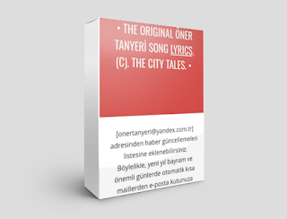
Some
scratches. How may a song lyric as a product outlook.
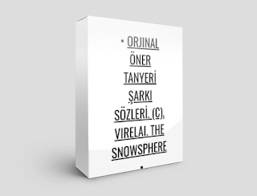
¤
Speaking, telling, and the speach making are the different things. ¤
¤
The slam poetries, poem reading, presentation making, history
telling, the philosophy making, and the podcasts – are found place
in the modern life. ¤
¤”
The idioms may be expressed with the number of the idioms. And, those
independent idioms with the motion pictures. Each sequence has its
own order, rhythym and the characteristic. So, the composition. “
“ Notasyon
bölümü 3 bölümden oluşmaktadır.
I)
Nota yazımı
Musecore
tutorial. Nota yazımı işleri. Orjinal kaynakların bulunması.
Tıpkıbasımların üretimi. Transkripsyon işleri. Enstrumanların
ve armonilerin kurallarına göre notaların yazılması. Aranjman ve
kompozisyon işlerinde nota yazımının önemi. Notasyon eğitimine
göre standardlaştırılmış nota yazımı.
II)
Nota havuzu
Bu
bölümde (c) Öner tanyeri resmi nota havuzu – nu bulabilirsiniz.
Buradaki portable document file p.d.f. elektronik kitap formatindaki
kişisel materyallerim, yazılı ve isminize şahsım tarafından
imzali izinim olmadan kullanımı dağıtımı paylaşımını
yapmayınız.
” 2024
yılında yapılmış (c) 17 piyano albümü ” öner tanyeri
tarafından üretildi. Dilediğiniz albümü, veya materyali e-posta
adresiniz üzerinden ulaşarak, adınıza yalnızca kişisel dinlemek
ve ticari ve diğer hiç bir şekilde kısmen veya değiştirerek
kullanmamak, materyal olarak paylaşmamak, üzere (c) tüm hakları
saklıdır lisansıyla, benden temin etmeniz mümkündür.
Notalarından
yazılmış tek tek şarkılar ile bilgisayarımda oluşturmuş
olduğum albümlerin içindekiler listesi:
“
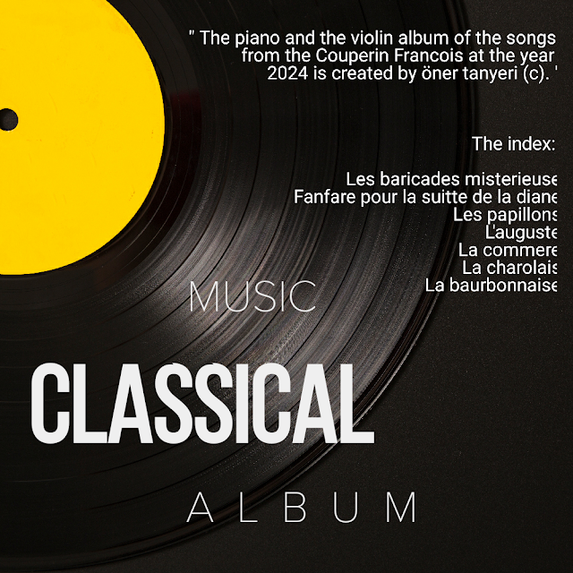
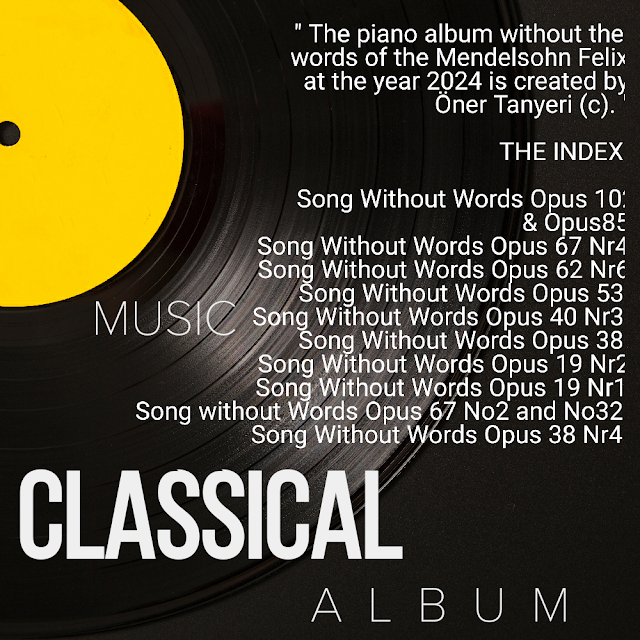
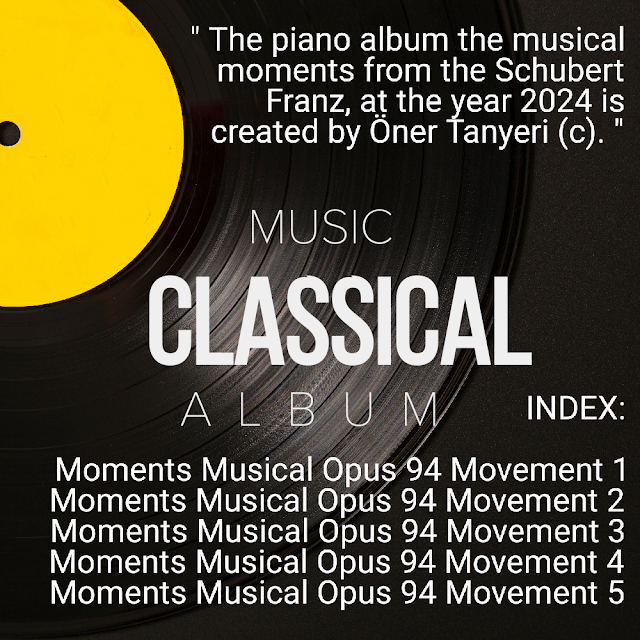
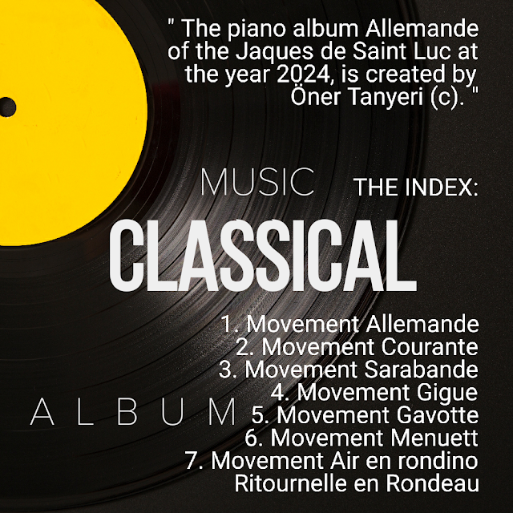
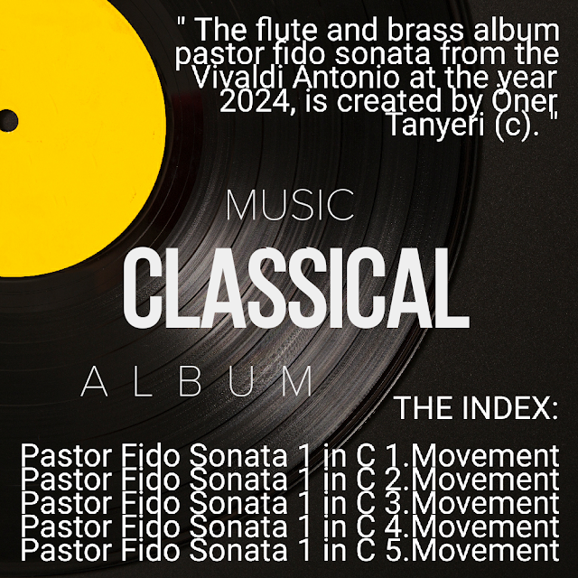
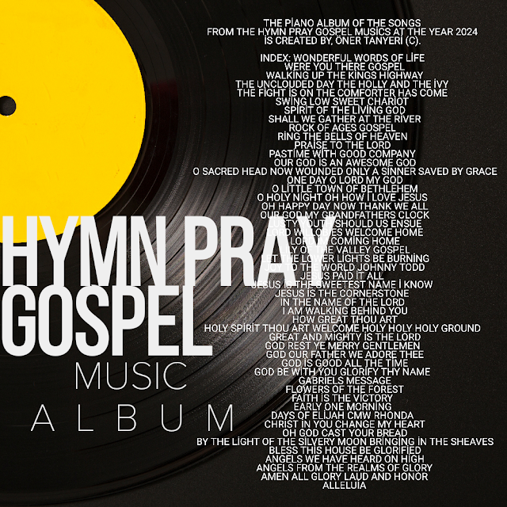
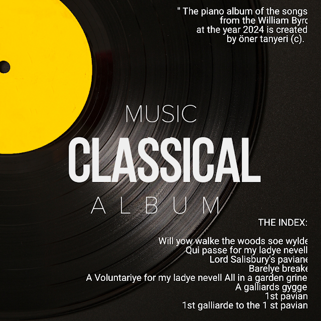
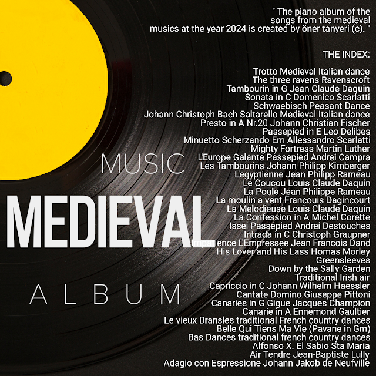
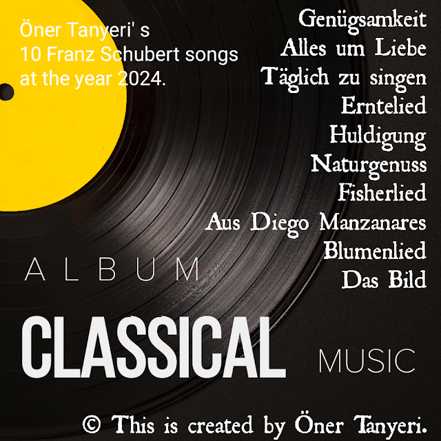
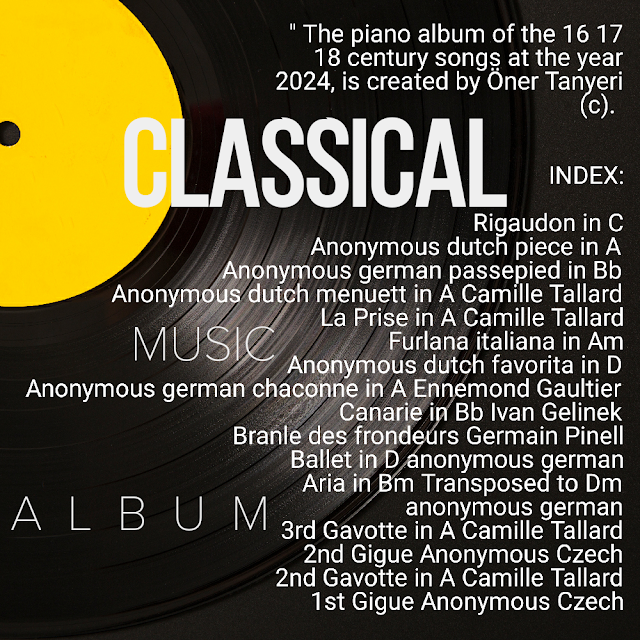
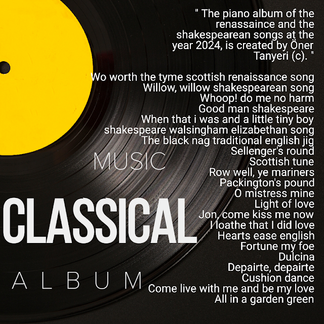
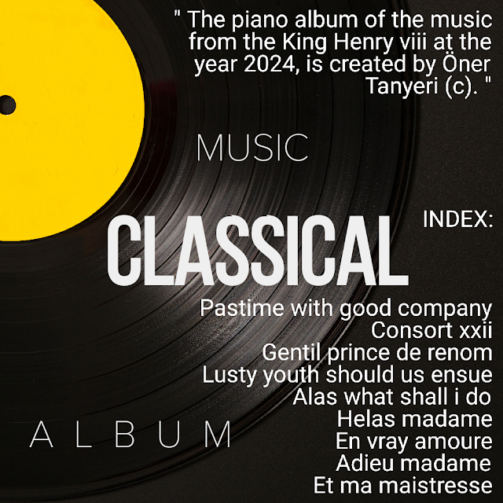
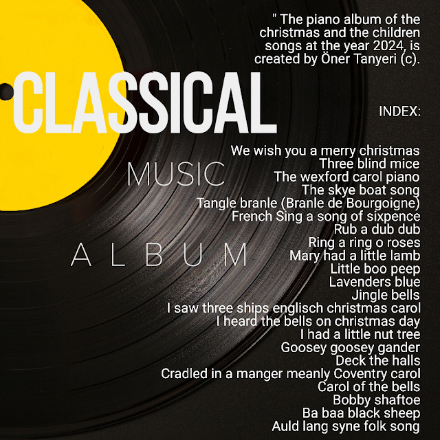
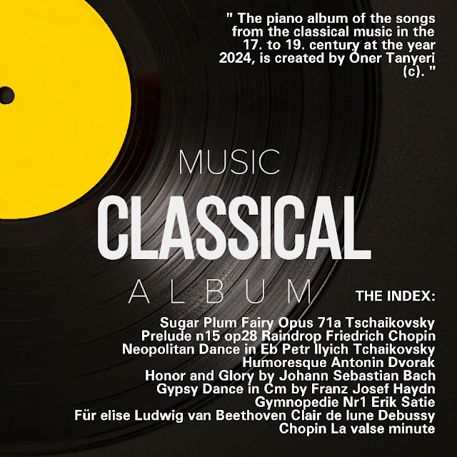
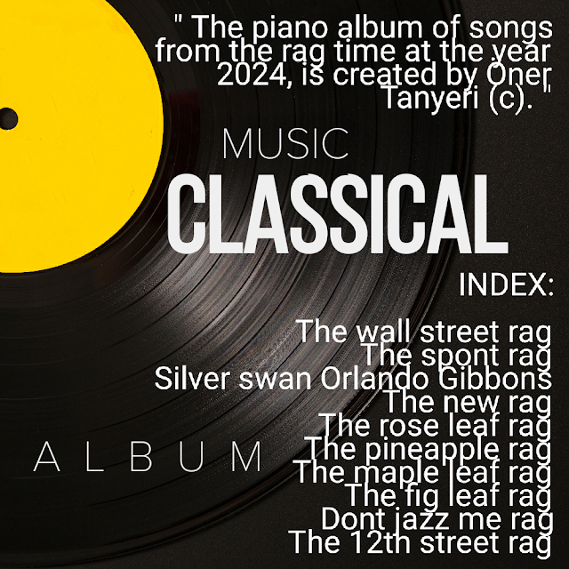
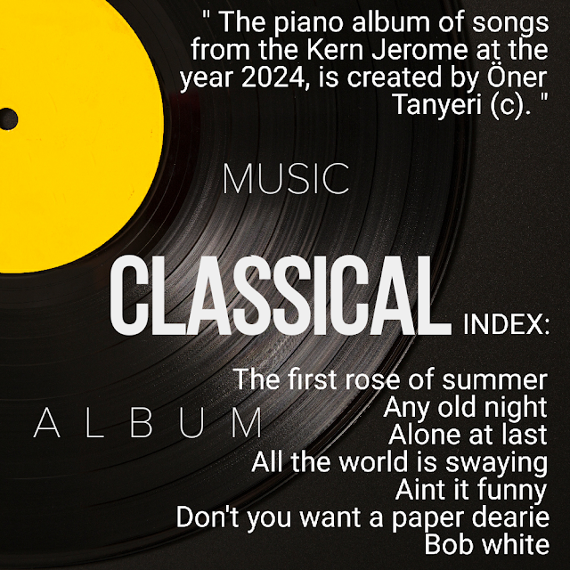

“ This
podcast is available for personal and noncommercially listening, no
downloading, no sharing, no derivative or influenced works. (c) You
can listen personally, with no costs; accessing through my online
folder. https://bit.ly/agdakiyer For
the best listening experience, avoid the external sources to
interfere and, use appropriate headphones. “
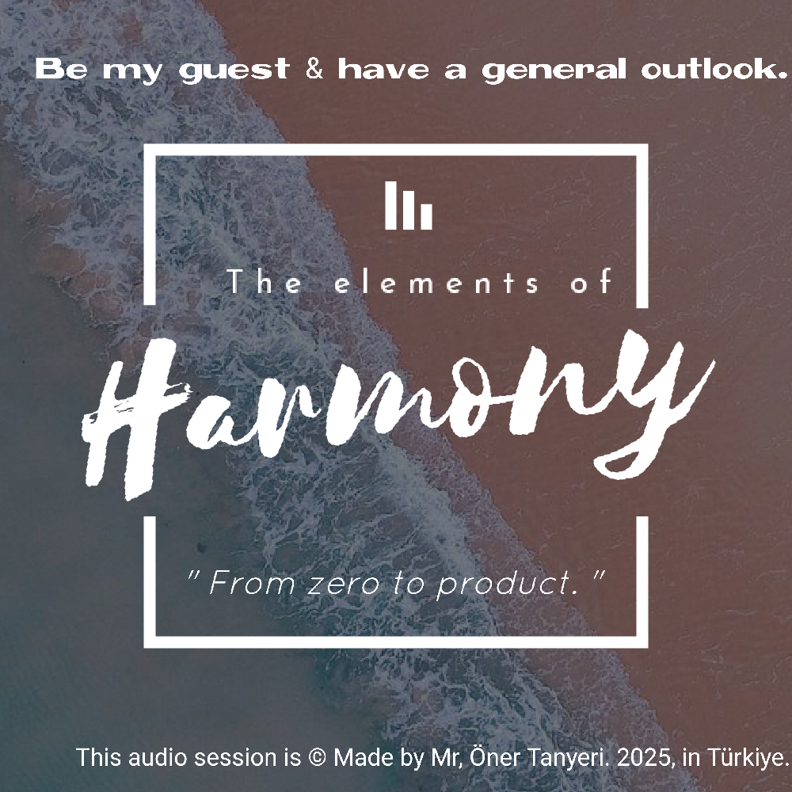
“ This
beautifull memory chards pack publishing; is created by, Öner
Tanyeri (c).
And,
made from the 2 parts. A) the original chord images and, B) the
properties of the sound. “
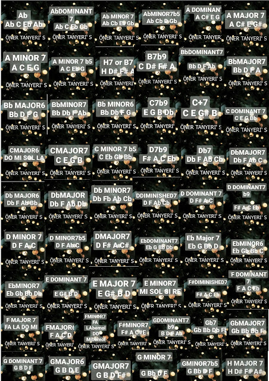
“ For the diverse material about these, go to
this link which i called the
box and check my playlists,
such as the audio design and the home recording, learn music, and for
the example the diverse playlist sorted by the style. Linux, ubuntu
enterprises, the studio versions allows the user, to access the disk
jockeying experiences, with almost all properties and the
possibilities. “
“ Mr.
Öner Tanyeri’ s quick tip and previews of the only personally and
non-commercially no usage any kind, share, derivatives, influencing
etc. and so on personal e
book shelf,
to learn remember and have a map like orientations between the basic
issues of the music – original rare summarized, from the beginners
level to pronunciate level.
Chords
in motion guitars fundamentals video set of the demonstration.
© the usage of the chords on the guitar music instrument. Kişisel
olarak erişebilirsiniz. Lütfen indirme paylaşım malzeme olarak
kullanmak, türetim etkilenme çarpıtma,yapmayınız. Tüm hakları
saklıdır. “
“ THE
REPEATING PATTERNS SPECIALISED ON THE ELECTRIC GUITAR MUSİC
INSTRUMENT THE DIFFERENT STYLES OF THE JAZZ MUSIC. From the sketches
to building your choise of the charachteristic lines and the
melodies. Step by step easily readable examples, written for
the instruments and the vocals. FROM NOVICE TO ADVANCED • The
articulation works. The intonation works. Vocals learning, letters
singing, loud unloud flat round. The word singing. scat singing. Sing
the sequences of the notes, represented with the synthaxes. Make; ”
the repeating patterns ” for your diversity of needs and,
practicing. The repeating patterns may be used in any genre, style,
form and duration. THE TRUE ART OF CRAFTING • The rhytmic
solmization. The rhytmical pronuncuation of the words. The rhytmik
sounds producing. Learn the nature and the diversity of the patterns.
PRE THEMAS THE BASIC SOUVERANITY • Making music through building
lines, passages, or textures from and with the repeating patterns. As
the most of the readers may think, we are making music through
producing sound either with our instruments, or with our voices. We
learn it old scholl like seeing, hearing, and in the music through
repeating or, making together with the other musicians. A systematic
like using the music methods. Disciplines, genres, styles and arts.
The education, self learning or learning from the teachers at the
appropriate schools. To be able to understand the processes of making
music which is not abstracted from the thinking, there is also some
knowledge may be needed. Making music with the repetitave patterns,
producing repetitative textures, creating a consept with the
different music instruments can bring us to use our knowledge. “
Sayfalarımdaki
tüm içerik, telif hakkı korumalıdır. İmzalı, izinim
olmaksızın, kopyalanamaz, herhangi bir şekilde kullanılamaz. made
in linux. (c).
(c)
All copyrighted online pages, the copy and all the other rights, are
belong only to, mr. Öner Tanyeri.
” The
original podcast by Mr. Öner Tanyeri, is online at the spotify. Just
search with the keywords, “learn improvisation” at the spotify,
deezer, pocketcasts, and amazon music, see there, and click this
image below.
or,
click the; deezer spotify amazon
music .
“
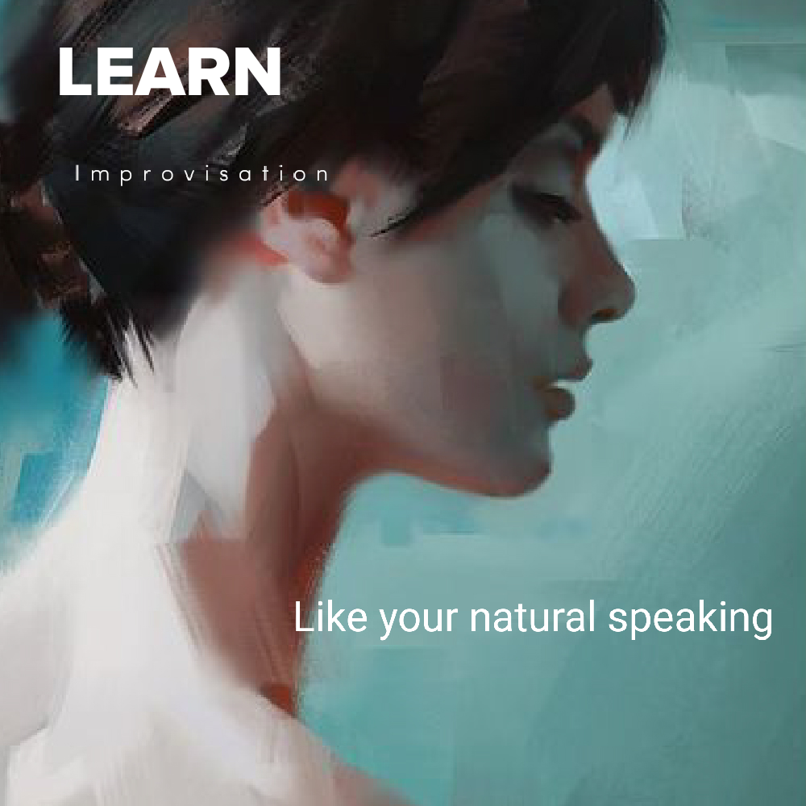
” Over
20 free episodes created by, Mr. Öner Tanyeri, free online and
open
for the
listening. “
“ Mr.
Öner Tanyeri (c) produced,
3
short
animation comic
clips made with the claymotion pictures and,
very
effective 4
short guitar learn tips. Like,
You may play guitar for years but did not suceeded to pass this
simple steps clearly.
Just visit, my online folder https://bit.ly/agdakiye
to
view.
You
can view personally, and, noncommercially. No downloads, shares,
derivatives, and influenced works, is allowed. You can learn from the
short tips, and watch the animations for fun. “